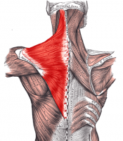
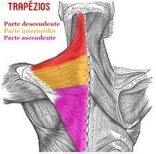
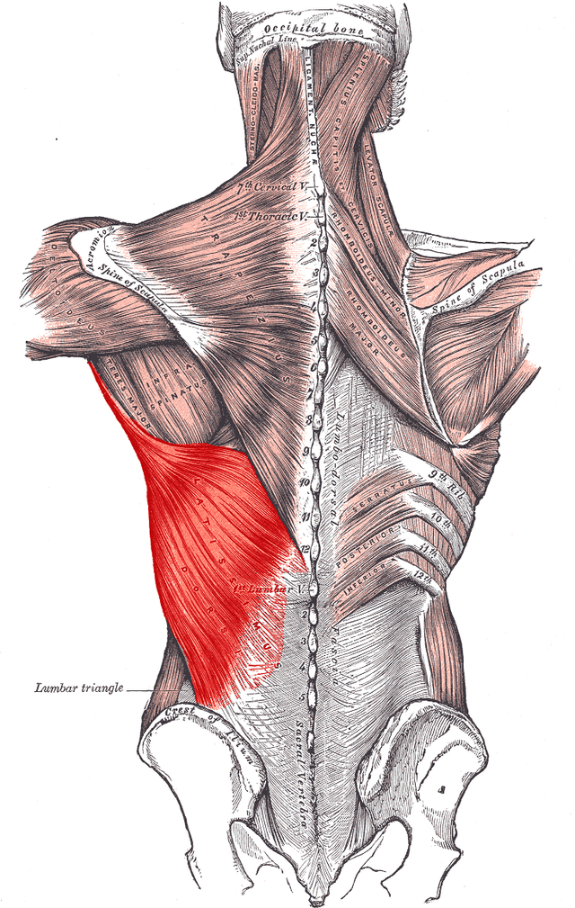
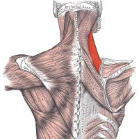
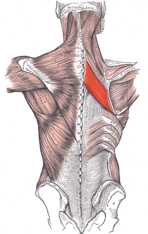
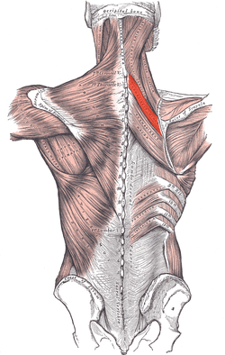
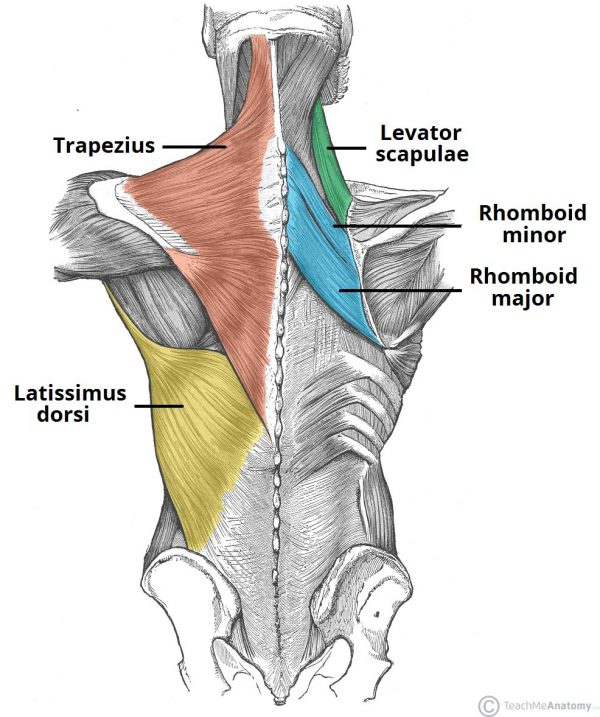
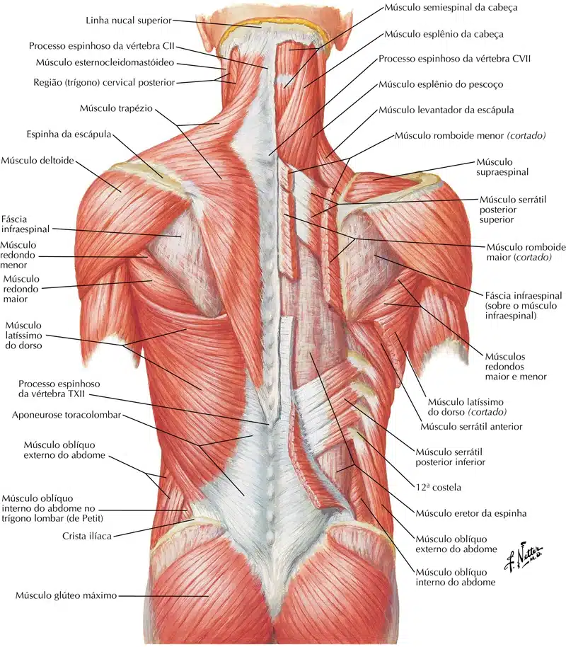
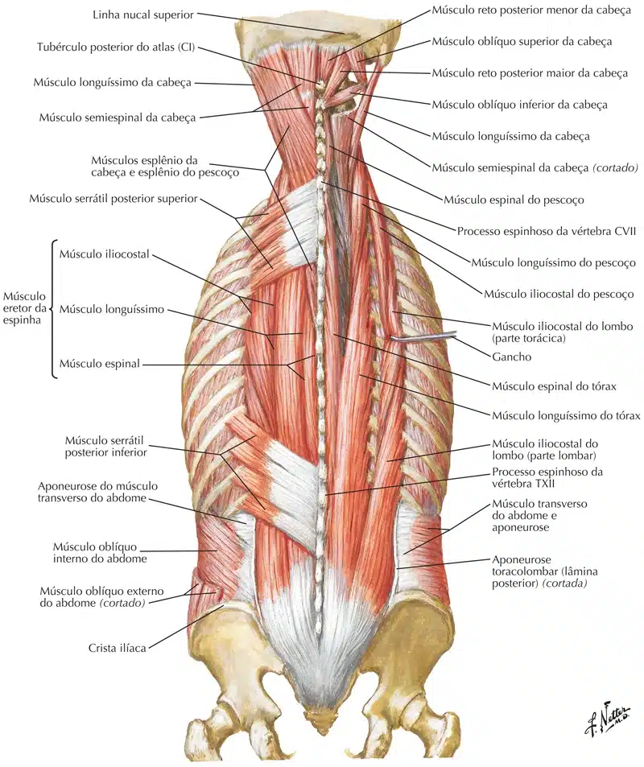

Os músculos extrínsecos superficiais do dorso são toracoapendiculares, que unem o esqueleto axial (coluna vertebral) ao esqueleto apendicular superior (cíngulo do membro superior e úmero) e produzem e controlam os movimentos dos membros.
Embora estejam localizados na região do dorso, a maioria desses músculos é inervada pelos ramos anteriores dos nervos cervicais e atuam no membro superior.
Os músculos extrínsecos intermediários do dorso são finos, comumente designados músculos respiratórios superficiais, porém são mais proprioceptivos do que motores.
Extrínsecos superficiais
Trapézio
As fibras do músculo trapézio são divididas em três partes, que têm ações diferentes na articulação escapulotorácica.
Inserção Medial: Linha nucal superior, ligamento nucal e processos espinhosos da C7 a T12.
Inserção Lateral: Borda posterior da clavícula, acrômio e espinha da escápula.
Inervação: Nervo Acessório (XI par craniano) e nervo do trapézio (C3 – C4).
Ação:
Fixo na Coluna: Elevação do ombro, adução das escápulas, rotação superior das escápulas e depressão de ombro.
Fixo na Escápula:
Contração Unilateral: Inclinação homolateral e rotação contralateral da cabeça.
Contração Bilateral: Extensão da cabeça.


Latíssimo do dorso
Inserção Medial: Processos espinhosos da 6ª últimas vértebras torácicas e todas lombares, crista do sacro, 1/3 posterior da crista ilíaca e face externa da 4 últimas
costelas.
Inserção Lateral: Sulco intertubercular.
Inervação: Nervo Toracodorsal (C6 – C8).
Ação: Adução, extensão e rotação medial do braço. Depressão do ombro.

Levantador da escápula
Inserção Inferior: Ângulo superior da escápula.
Inserção Superior: Processo transverso do atlas ate à C4.
Inervação: Nervo dorsal da escápula (C5).
Ação: Elevação e adução da escápula. Inclinação e rotação homolateral da coluna cervical e extensão da cabeça.

Rombóide maior
Inserção Medial: Processos espinhosos da T1 a T4.
Inserção Lateral: Borda medial da escápula.
Inervação: Nervo dorsal da escápula (C5).
Ação: Adução e rotação inferior das escápulas e elevação do ombro.

Rombóide menor
Inserção Medial: Processos espinhosos da C6 a C7.
Inserção Lateral: Borda medial da escápula.
Inervação: Nervo dorsal da escápula (C5).
Ação: Adução e rotação inferior das escápulas e elevação do ombro.


Extrínsecos intermediários
Serrátil póstero-superior
Inserção Medial: Processos espinhosos da C7 à T3.
Inserção Lateral: Borda superior e face externa da 2ª a 5ª costelas.
Inervação: Ramos dos 4 primeiros nervos intercostais.
Ação: Elevação das primeiras costelas (ação inspiratória).

Serrátil póstero-inferior
Inserção Medial: Processos espinhosos da T11 à L3.
Inserção Lateral: Borda inferior e face externa da 4 últimas costelas.
Inervação: 9º ao 12º nervos intercostais.
Ação: Depressão das últimas costelas (ação expiratória).



Quer aprender anatomia de um modo simples e objetivo? Conheça nossos cursos:
Referências Bibliográficas
BONTRAGER: Kenneth L.; John P. Manual Prático de Técnicas e Posicionamento Radiográfico. 8 ed. Rio de Janeiro: Elsevier, 2015.
DRAKE, Richard L.; VOGL, A. Wayne; MITCHEL, Adam W. M.: Gray’s anatomia clínica para estudantes. 3 ed. Rio de Janeiro: Elsevier, 2015.
HALL, John Edward; GUYTON, Arthur C. Guyton & Hall tratado de fisiologia médica. 13 ed. Rio de Janeiro: Elsevier, 2017.
NETTER: Frank H. Netter Atlas De Anatomia Humana. 7 ed. Rio de Janeiro, Elsevier, 2018.
MOORE: Keith L. Anatomia orientada para a clínica. 8 ed. Rio de Janeiro: Guanabara Koogan, 2018.
SOBOTTA: Paulsen, Friedrich. Sobotta Atlas Prático de Anatomia Humana. 3 ed. Rio de Janeiro: Guanabara Koogan, 2019.
SCHUNKE, M. Prometheus – Atlas de Anatomia 3 Volumes. 4 ed. Guanabara Koogan, 2019.